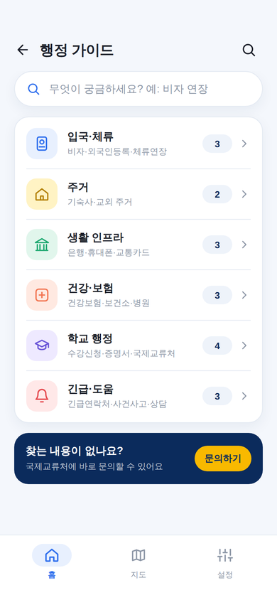
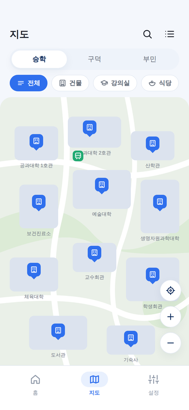
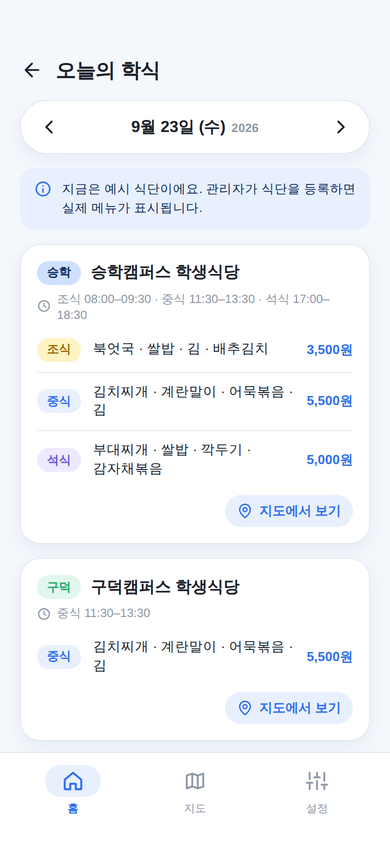
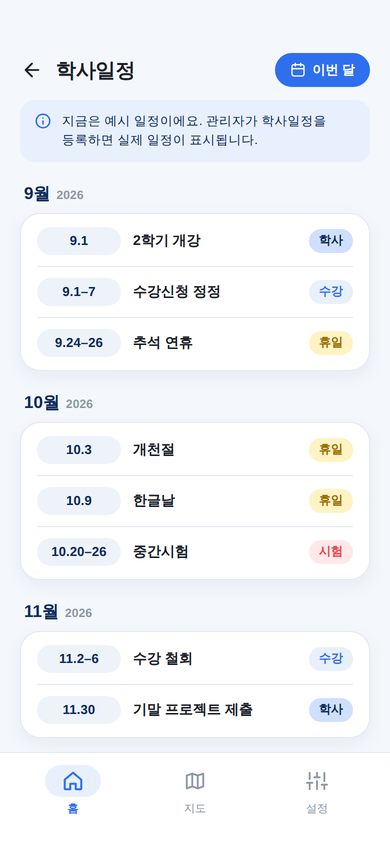
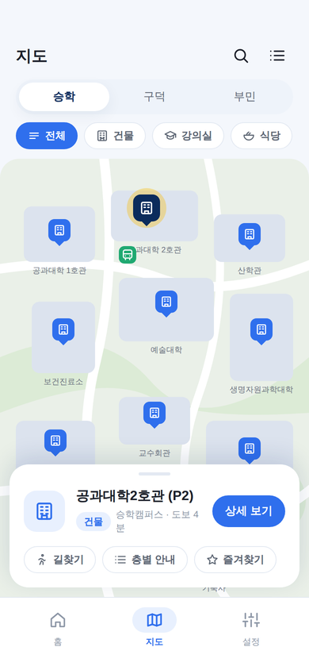
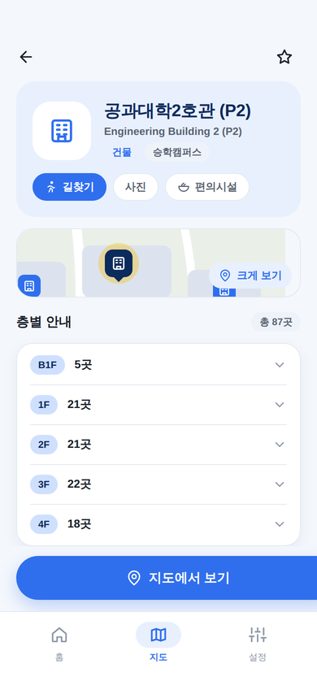
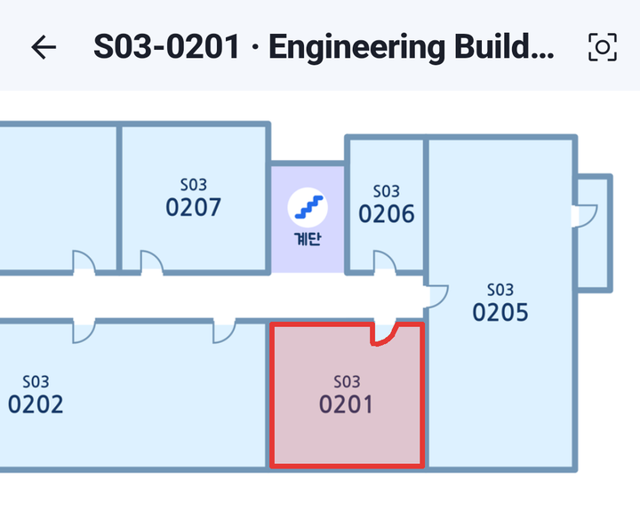

외국인 유학생이 입학부터 졸업까지 필요한 학교 생활 정보를 한 앱에서 찾을 수 있도록 만들었습니다.
Flutter · 카카오맵 · Firebase | 2026.07 – 2026.10
학교 공지·행정 안내 대부분이 한국어로만 제공됩니다.
지도, 학식, 학사일정, 비자 절차가 사이트마다 따로 있습니다.
외국인등록, 체류연장, 건강보험은 순서와 준비물을 알기 어렵습니다.
승학·구덕·부민 3개 캠퍼스, 48개 건물에서 강의실을 찾아야 합니다.
교환학생 A
한 학기 체류. 교통·식당·생활 정보로 빨리 적응해야 합니다.
학위과정 유학생 B
장기 체류. 비자·수강신청 같은 행정 정보가 중요합니다.
공통 니즈
모국어 지원 · 오프라인 접근 · 믿을 수 있는 최신 정보
07.14 첫 커밋 → 08.31 동아메이트 이름·아이콘 확정 → 09.27 4개 언어·가이드 34종 통합 → 10.11 main 통합 APK
홈

행정 가이드

캠퍼스 지도

오늘의 학식

학사일정


S03-0201 또는 "공과대학 2호관 301"
지하 B101, 세부 0101-A, 동 분할 B04A/B까지 해석
캠퍼스 자동 전환 후 해당 건물에 빨간 점
층 도면 위에 실제 방 모양을 강조 표시

실제 앱 화면 — S03-0201 하이라이트
비자 · 외국인등록 · 체류연장
기숙사 · 교외 주거
은행 · 휴대폰 · 교통카드
건강보험 · 보건소 · 병원
수강신청 · 증명서 · 국제교류
연락처 · 사건사고 · 상담
관리자가 학식·학사일정을
익숙한 표 양식으로 입력
형식 검증, 잘못된 행 격리,
500건 단위 청크 커밋
보안 규칙으로 앱은 읽기만,
100MB 오프라인 캐시
당겨서 새로고침,
한국 시간 기준 날짜 표시
식당 8곳, 시간대 × 유형 섹션, 메뉴별 가격, 휴게시간이 포함된 운영시간까지 표시합니다. 날짜를 넘겨 다른 날 메뉴도 볼 수 있습니다.
현재 학년도(3월~이듬해 2월) 일정만 보여 주고 오늘 날짜를 강조합니다. 홈 화면에 "다가오는 일정"으로 함께 노출됩니다.
상태 관리 Riverpod (autoDispose + 5분 TTL 캐시) · 라우팅 go_router · 하단 3탭 셸
두 팀이 독립적으로 같은 결함을 찾은 건이 11건, 실제 기기에서 재현된 건이 30건 이상입니다.
지도 필터·내 위치 동기화, 검색·뒤로가기 상태 보존, 시작·지도 로딩 실패 복구, 오프라인 구분 안내 등 High·Medium·Low 결함을 영역별로 나눠 수정하고 에뮬레이터 E2E로 다시 확인했습니다.
flutter analyze 경고main 통합본을 Claude·Codex가 다시 감사. 남은 지적은 P1 1건(릴리스 서명), P2 약 10건입니다.
Phase 2 후보 — 공지 알림(푸시), 로그인 기반 개인화, 유학생 커뮤니티/Q&A, 다른 대학 확장
동아메이트 — 유학생의 첫 학기를 함께하는 앱
질문 받겠습니다